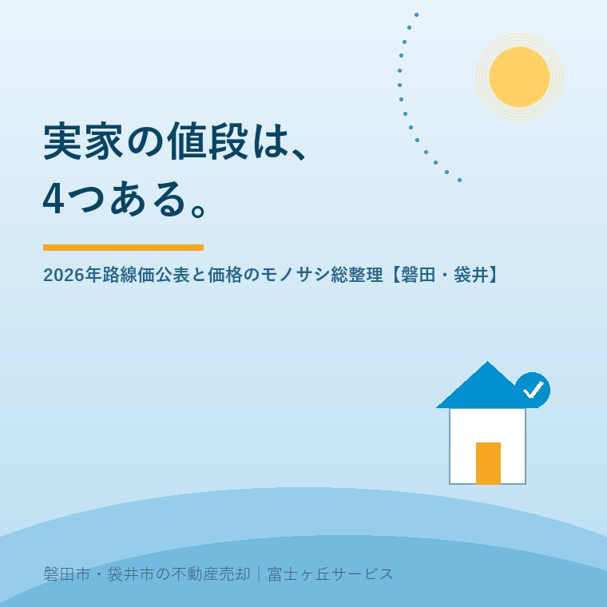

2026年7月31日｜カテゴリ：相場・路線価・売却の基礎知識

この記事の要点
Q. 路線価が上がったとニュースで見た。磐田の実家も高く売れるようになった？
A. 必ずしもそうではありません。路線価は相続税・贈与税を計算するためのモノサシで、実際に売れる値段（実勢価格）とは役割が違います。土地の値段には公示地価・路線価・固定資産税評価額・実勢価格の4つのモノサシがあり、それぞれ目的も水準も別物です。磐田市・袋井市では、介護施設の運営から不動産事業を始めた富士ヶ丘サービスのような地域密着の会社に、「実際に売れる値段」の見立てを相談するという選択肢があります。
7月1日、国税庁が2026年分（令和8年分）の路線価を公表しました。全国平均は前年比＋2.9％で5年連続の上昇、現在の算定方式になった2010年以降では最大の伸びです。「地価が上がっている」というニュースを見て、「じゃあ実家も高く売れるのでは」と期待された方も多いはず。ただ、不動産の現場から言うと、この話には整理が必要です。実は、土地の値段には「4つのモノサシ」があり、ニュースで報じられる路線価は、そのうちの1つにすぎません。7月の締めくくりに、実家の「値段」の全体像を総整理します。
今年の路線価のポイントは3つです。
磐田市・袋井市を含む地方の住宅地は、場所によって上昇・横ばい・下落が分かれます。ご自身の実家の前の道路の路線価は、国税庁の「財産評価基準書（路線価図）」で無料で確認できます（調べ方は後述）。
| モノサシ | 誰が・何のために | いつ | 水準の目安 |
|---|---|---|---|
| 公示地価 | 国土交通省。土地取引の目安となる「標準地」の価格 | 1月1日時点を3月に公表 | 基準（100とする） |
| 路線価 | 国税庁。相続税・贈与税の計算に使う道路ごとの単価 | 1月1日時点を7月に公表 | 公示地価の8割程度 |
| 固定資産税評価額 | 市町村。固定資産税などの計算に使う評価額 | 3年ごとに評価替え | 公示地価の7割程度 |
| 実勢価格 | 売主と買主。実際に売買が成立する値段 | 取引のその時々 | 市場次第（公示地価より高くも安くもなる） |
「一物四価」とも呼ばれるこの関係、ポイントは役割がぜんぶ違うことです。路線価は税金のため、固定資産税評価額も税金のため、公示地価は取引の目安のため。そして、ご家族の関心事である「いくらで売れるか」に答えるのは、4つ目の実勢価格だけです。公示地価の詳しい読み方は公示地価2026の記事もご覧ください。
そして、見逃せないのが逆側の影響です。路線価は相続税のモノサシなので、路線価の上昇はそのまま「相続税評価額の上昇」を意味します。相続税には基礎控除（3,000万円＋600万円×法定相続人の数）があり、これまで「うちは相続税に関係ない」と思っていたご家庭でも、地価上昇と預貯金を合わせると控除を超える──というケースが増えています。売値は変わらないのに税負担だけ増える、ということも起こり得るのです。気になる方は早めに評価額の試算を。
| 調べたいもの | 使うサイト |
|---|---|
| 実家の前の道路の路線価 | 国税庁「財産評価基準書（路線価図）」。千円単位の㎡単価が道路ごとに載っており、「200D」なら1㎡あたり20万円（記号は借地権割合） |
| 路線価・公示地価・固定資産税評価をまとめて | 一般財団法人資産評価システム研究センター「全国地価マップ」 |
| 近隣の実際の成約価格 | 国土交通省「不動産情報ライブラリ」。実際の取引価格・成約情報を地図から確認できる |
注意点を2つ。路線価図の単価に面積を掛けただけの金額は「概算の相続税評価」であって売値ではありません。また、奥行や形状による補正、借地権、広すぎる土地の減額（地積規模の大きな宅地）など、正確な相続税評価は税理士の領域です。自分調べは「入口の目安」と割り切るのがコツです。
実務では、「固定資産税評価額は1,500万円なのに、査定したら800万円だった」「逆に、評価額は低いのに立地が良くて評価額以上で売れた」──どちらも普通に起こります。評価のモノサシと市場の距離が大きいのが、地方の実家の特徴だからです。だからこそ、①税金の計算は路線価・固定資産税評価額で、②「いくらで売れるか」は地域の成約事例に基づく査定で、と使い分けることが、期待値のズレと家族の行き違いを防ぎます。
当社のふじがおか実家カルテでは、路線価・固定資産税評価額と、磐田・袋井の実勢の肌感を突き合わせて、「この家の4つの値段」を1冊に整理してお渡しします。相続税が気になる水準のお宅には、提携税理士への橋渡しもいたします。
富士ヶ丘サービスは、磐田市・袋井市に特化した地域密着の会社として、評価のモノサシと実際の市場、その両方から実家の「本当の値段」をご一緒に確かめます。7月に書いてきた税金・費用・活用の各記事とあわせて、実家のこれからを考える材料にしていただければ幸いです。
ふじがおか実家カルテ｜「4つの値段」の整理に
評価額と売れる値段。その差を、まず1冊で確かめる。
登記情報と固定資産税通知書から、路線価・評価額と売却の見通しを宅建士が机上で整理してお渡しします。相続税が気になる方には提携税理士への橋渡しも。
本記事は2026年7月31日時点の情報をもとに作成しています。路線価・固定資産税評価額の水準（公示地価の8割・7割）は制度上の目安であり、個別の土地で異なる場合があります。相続税評価額の正確な計算・申告の要否は税理士・税務署へご確認ください。
磐田市・袋井市の実家じまい・相続空き家相談
固定資産税通知書だけでも相談できます
住所があいまいでも、通知書や写真から名義・道路・農地・残置物の確認順を整理します。カルテ申込またはLINEで状況を送ってください。
富士ヶ丘サービス株式会社／静岡県磐田市見付5789番地1／TEL:0538-31-3308／静岡県知事 (2) 第14083号／代表取締役・宅地建物取引士 大石 浩之